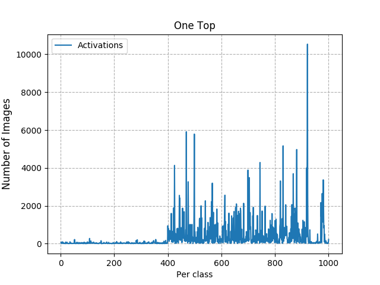
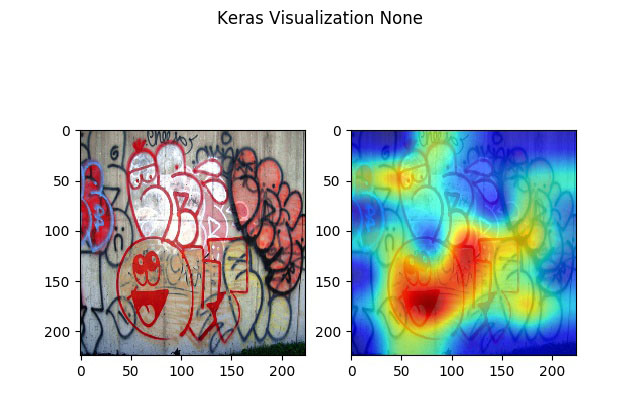
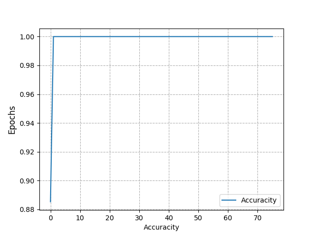
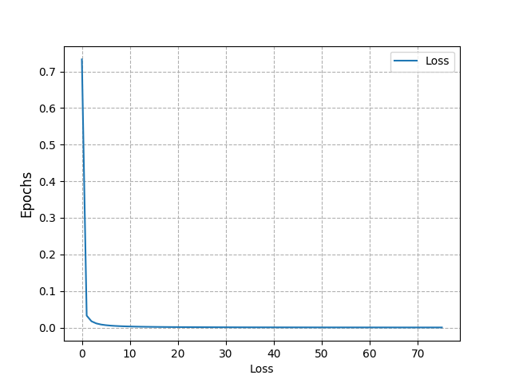

Analyzer
The analyzer allow you see the information through any ways suchs deep visualization, 1-Top activations or plot 'loss and accuracity' from train.
1-Top from model
See the 1-top from model and test result.
python Main.py --mode top --test_name testing_imagenet_test_set --model_name 20181210091231

Top-1 to classe from model 20181210091231 at dataset testing_imagenet_test_set
Deep Visualization
See a deep visualization activation
python Main.py --mode visualization --files ../../data/datasets/graffiti/classes/graffiti/4235365635_a5fba2a2d8_o.jpg --model_name model_example_1 --class_name freight\ car

Plot Loss an Acc
Plot in images loss and acc of model
python Main.py --mode plot --model_name 20181210091231
| Acc | Loss |
|---|---|
|  |  |
Tip
You can use Visualizer to see the same information about loss and acc with a webserver.
Arguments
-
--mode: if you want
toporvisualization -
--title: title used in images or files to export
Top arguments
-
--number_of_tops: Set the number of top suchs 1 or 5.
-
--test_name: Load the values predictions to top
-
--save_histogram_to_csv: If you want save the .csv representation.
-
--save_histogram_to_png: If you want save the .png representation.
-
--save_list_image: If you save de list of images by class in .csv file.
-
--number_limit_to_y: Top in chat to y. -1 do default
Visualization arguments
-
--files: file or list of images path to by analyze.
-
--model_name: name of model that want load and view activations
-
--modifier: you can choose None, 'guided', 'relu','deconv' and 'rectified'. separeted by comma if want multiple
-
--class_name: name of classe used
-
--show_both: show image and image with heatmap side by side
-
--epoch: Set the epoch with weigths that you want save